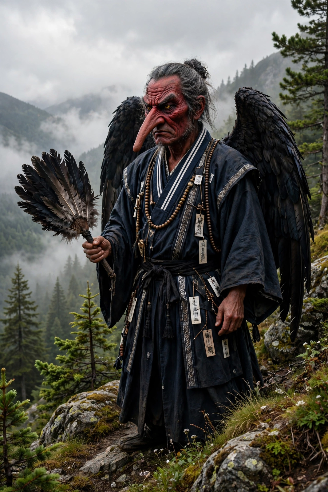

| Tengu | |
|---|---|
| Japanese | 天狗 ("heavenly dog") |
| Grouping | Yōkai; kami; protectors of mountains |
| Habitat | Mountains and forests, e.g. Mount Kurama, Mount Takao |
| Types | Daitengu (long-nosed, human-like); karasu tengu (crow-beaked) |
| Attributes | Feather fan, monk's staff, single-toothed geta, yamabushi dress |

Tengu (天狗, "heavenly dog") are legendary creatures of Japanese folklore, classed among the yōkai and sometimes worshipped as kami. They inhabit mountains and forests, where in early tales they were disruptive bird-like demons; over time they developed into ambivalent beings — dangerous tricksters and kidnappers of children, but also guardians of temples and masters of the martial arts.
Two main types are depicted. The karasu tengu ("crow tengu") is the older form: a humanoid figure with the head and wings of a crow. The daitengu ("greater tengu") is more human, distinguished by an unnaturally long nose and a red face, and dressed as a yamabushi mountain ascetic, complete with the small black cap, monk's staff (shakujō), feather fan and single-toothed wooden clogs. The long nose — itself the descendant of an earlier beak — became the species' emblem; "tengu" remains a Japanese idiom for a boastful person who is, figuratively, growing a long nose.
Tengu were once blamed for starting fires, possessing nuns and spiriting children away (a missing child was said to have suffered kamikakushi, a "hiding by the gods"). From the medieval period, however, the great tengu of famous mountains appear as teachers: the tengu of Mount Kurama, Sōjōbō, is said to have taught swordsmanship to the young Minamoto no Yoshitsune. In the Konjaku Monogatarishū and Noh drama, tengu punish arrogant and corrupt Buddhist priests — pride being the sin that causes a monk to be reborn as a tengu. In the Edo period they softened further into protectors of forests and local mascots.